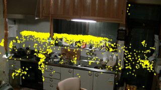

ターゲットと偽ターゲットを見分けるために、ハード的な工夫とソフト的な工夫を考えました。
ハードウェアの工夫とは、 発光するものを被ってもらう。ということ
暗い所に行っても色相も明度も変わらないから良さそうですが、難しさも。
屈み込んでも大丈夫にするには、帽子の様に覆うか孫悟空の如意輪にしなければ。 それはただちには難しそう。
鏡問題ではっと気がついた。発光体だと方々に反射しまくってかえってやっかいかも
そこで、まずはソフトウェアでの工夫二つを組み合わせてみました。
| 暗い所も鏡の反射も無事クリアできました。 | |
|  | |
| が、、、、 ターゲット位置を全部載せてみると、ありえない所 (天袋の右端)にマークが |
ターゲットが視野から外れると偽を拾ってしまう様です この対策もしましょう。 |
ターゲットの追いかけ具合をビデオで観てみますか？
6.2MB 4.1分
(解像度を縦横 1/6に落としてあります）